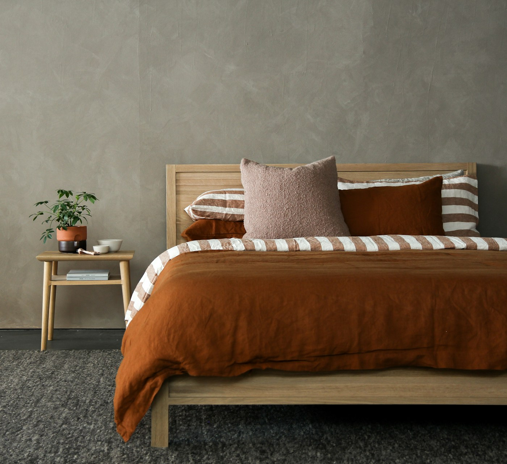
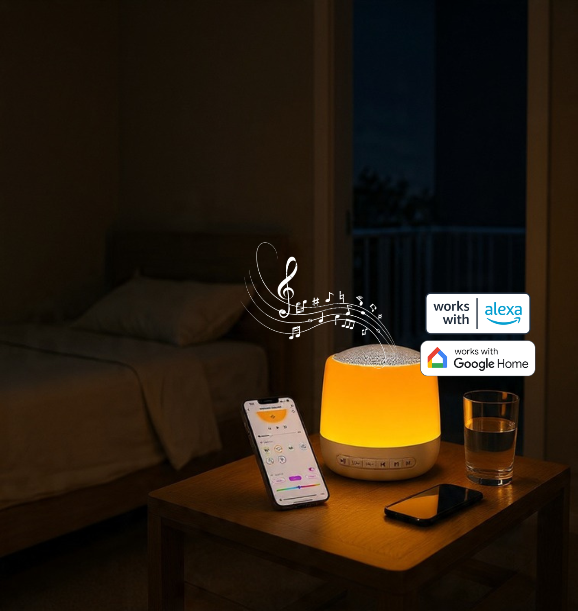

Free shipping across Australia · 100 nights to change your mind

Evidence
The evidence, at the size it was actually measured
Most sleep-gadget pages quote a five-person lab study as if it were a population. We've put the largest work first — meta-analyses of 173,000 survey responses, a pooled analysis of twelve randomised trials, a cohort of 88,905 people wearing light sensors — and left the honest verdicts in.
Reviewed September 202611 peer-reviewed sources, each linkedLargest study here: 88,905 participantsWeakest evidence: flagged in the text
How to read this page
Sample size decides what a study can tell you
A five-person lab night can prove a mechanism and prove nothing about populations. A cohort of tens of thousands shows a real-world pattern and can't prove cause. Every claim below is labelled with the tier it came from.
The studies on this page, to scale
Participants or survey responses, log scale. Blue is population-scale evidence; grey is single-lab work that demonstrates mechanism only.
Design, sample size and journal sit at the top of every block, because "a study found" means nothing without them.
What we won't do
No statistic without a paper. No borrowing authority from research done on equipment we don't ship. No numbers from our own marketing surveys.
When this changes
Reviewed twice a year. If a larger trial contradicts something here we change the claim and say what changed.
Established at population scale
Night-time noise wrecks sleep. That part isn't in doubt.
This is the best-evidenced link on the page, and it's the reason masking is worth trying at all. The World Health Organization's review of environmental noise and sleep, updated in 2022, pooled 36 surveys totalling 173,160 responses.
Odds of being highly sleep-disturbed, per 10 dB of night-time noise
Odds ratios with 95% confidence intervals, from questions that named noise as the source. Moderate quality of evidence under GRADE.
Railway traffic2.972.57–3.43
Road traffic2.522.28–2.79
Aircraft2.182.01–2.36
Any source, measured awakenings (EEG)1.351.22–1.50
Smith, Cordoza & Basner, Environmental Health Perspectives 2022; Basner & McGuire, WHO review 2018.12
Every 10 dB of night-time traffic noise roughly doubles the odds of reporting badly disturbed sleep — and raises the measured chance of waking by about a third.
Does masking help?
The pooled trial evidence is real, partial, and weaker than the category admits
Two things can both be true: randomised trials show measurable effects on some outcomes, and the field's own systematic review rates the overall evidence as very low quality. We publish both, in that order.
Pooled results from twelve randomised trials
Mean difference against control, with 95% confidence intervals. Every row shown here is the infant and young-child subgroup — adult and older-adult results were analysed separately. Each row is drawn on its own scale; the dashed line is "no effect". Grey bars cross it, meaning no reliable effect was found.
Total sleep time infants, 24 h+138 min68 to 207
Sleep efficiency infants, overnight 12 h+6.6%1.7 to 11.5
Night-time awakenings infants, 12 h−1.8−3.1 to −0.5
Total sleep time infants, overnight 12 hno effect−40 to 245
Wake after sleep onset infants, 24 hno effect−27 to +10
Statistically significant Confidence interval crosses zero — not significant
Ding et al., Impact of white noise on sleep quality across age groups — systematic review and meta-analysis of 12 RCTs, 1,301 participants. Sleep Medicine, 2025.3
Systematic review, PROSPERO-registered38 studies screenedSleep Medicine Reviews, 2021
The most authoritative review of white noise says the evidence is very low quality
Riedy, Smith, Rocha and Basner — the same University of Pennsylvania sleep-and-noise group behind the WHO review — set out to answer one question: do white-noise machines improve sleep onset, fragmentation and quality? Two reviewers screened three databases, assessed risk of bias across 38 included articles, and found the studies too heterogeneous to pool: noise characteristics, measurement methods, adherence and control conditions all varied. Their conclusion was that the evidence for continuous noise improving sleep is very low, and they advised caution given that noise is otherwise known to harm sleep.4
What we take from it. Masking is a reasonable thing to try in a noisy room, not a proven treatment. If your bedroom is already quiet, the honest expectation is that sound will make little difference — which is exactly why the Glow ships with a 100-night return window instead of a promise.
Riedy SM, Smith MG, Rocha S, Basner M. Sleep Medicine Reviews, 2021;55:101385.
Mechanism
Why it can work: the gap, not the volume
In a controlled lab study, volunteers slept through recorded intensive-care-unit noise with and without white noise added. Arousals ran at 13.3 per hour on a quiet baseline, 48.4 under ICU noise alone, and 15.7 when white noise was mixed in.5
The useful part is what predicted an arousal: the difference between background level and peak — about 17.5 dB in both noise conditions — rather than the peak itself. Raise the floor and the same door closing no longer clears it. A separate crossover study at Brigham and Women's Hospital found broadband sound shortened time-to-sleep by 38% in a model of transient insomnia, with no significant change to sleep architecture.6
Five and eighteen participants respectively. Mechanism, not population effect.
Masking narrows the gap between the quiet of a bedroom and the noise that interrupts it.
Light at night
The largest study here isn't about sound at all
88,905 UK Biobank participants wore wrist light sensors for a week — about 13 million hours of data — and were followed for eight years, during which 3,750 died. Brighter nights tracked with higher mortality risk; brighter days with lower.
All-cause mortality risk by personal light exposure
Adjusted hazard ratios against the darkest-night and dimmest-day groups (0–50th percentile). Ranges reflect the published models.
Night light, 90–100th pct1.21–1.34
Night light, 70–90th pct1.15–1.18
Day light, 70–90th pct0.74–0.84
Day light, 90–100th pct0.66–0.83
Higher risk than reference Lower risk than referenceObservational — association, not proof of cause
Windred et al., PNAS 2024;121(43):e2405924121. Mean follow-up 8.0 years.7
Warm lamps suppressed melatonin about a third as much as cool ones
Modelled melatonin suppression values by lamp type: cool white LED 12.3%, cool CFL 12.1% — against warm white LED 3.6%, warm CFL 2.6% and incandescent 1.5%.8 Laboratory work on colour temperature found suppression close to negligible below roughly 2000 K, rising as the light got cooler.9
That is the whole reason the Glow's default sits at 1800 K and dims to almost nothing: the least circadian cost for enough light to see by. A sensible default, not a therapy.

The claim we won't make
Pink noise and memory: a real finding about equipment we don't sell
Randomised order, sham-controlledn = 13, aged 60–84Frontiers in Human Neuroscience, 2017
Pulses timed to slow brainwaves improved next-morning recall
A Northwestern Medicine team tracked the phase of each sleeper's own slow waves from EEG and fired 50-millisecond pink-noise pulses at the predicted upstate. Slow-wave activity rose and word-pair recall improved roughly three times more than after a sham night.10
This came from electrodes and a phase-locked loop, not continuous playback. Thirteen people, one night each. The Glow does not read your brainwaves and makes no memory claim — if a sound machine advertises one, this is the study being stretched.
Papalambros NA et al. Frontiers in Human Neuroscience, 2017;11:109.
Safety
The volume rules, especially for a nursery
A team at Toronto's Hospital for Sick Children measured 14 infant sleep machines at maximum volume. Every one exceeded 50 A-weighted decibels at 30 cm — the level recommended for hospital nurseries — and three exceeded 85 dBA, which over eight hours would breach adult occupational noise limits.11
Quiet bedroom30 dBA
Nursery limit recommended ceiling50 dBA
All 14 machines tested at max, 30 cm away>50 dBA
Three of the 14 occupational-limit territory>85 dBA
The devices weren't named, and the finding is about maximum output and placement rather than white noise itself. It's still the most important thing a sound-machine company can tell a new parent, so we'd rather it sat on our page than someone else's.
01Across the room, never in the cot. Distance does more than any volume dial.
02The lowest level that still masks the street. If you can hold a conversation over it, it's loud enough.
03Around 50 dB or below for all-night infant use — roughly a quiet fridge.
04Use the fade timer. Masking matters while you're falling asleep, not for twelve unbroken hours.
05See a clinician, not a lamp, if sleep stays broken. Persistent insomnia, snoring or daytime exhaustion deserve a real assessment.
In summary
What we'll say, and what we won't
Supported by the evidence above
Night-time noise disturbs sleep, with moderate-quality evidence across 173,160 survey responses.1
In infants and young children, pooled randomised trials show fewer awakenings and better overnight sleep efficiency.3
Bright light at night tracks with worse long-term health outcomes at population scale.7
Warm light suppresses melatonin far less than cool light — measured across 52 lamps.8
Not supported — so we don't claim it
That white noise reliably improves sleep for everyone — the systematic review rates that evidence very low.4
That it treats insomnia, apnoea or any sleep disorder. It's a bedside lamp and a speaker.
That playing sound improves memory. That result needed EEG-timed pulses, not playback.10
That louder is better. Above roughly 50 dB near an infant, the evidence points the other way.11
References
Sources
Smith MG, Cordoza M, Basner M. Environmental noise and effects on sleep: an update to the WHO systematic review and meta-analysis. Environmental Health Perspectives, 2022;130(7). View paper
Basner M, McGuire S. WHO environmental noise guidelines for the European region: a systematic review on environmental noise and effects on sleep. Int J Environ Res Public Health, 2018;15(3):519. View paper
Ding Y et al. Impact of white noise on sleep quality across age groups and in critically ill / non-critically ill patients: a systematic review and meta-analysis of randomized controlled trials. Sleep Medicine, 2025. View paper
Riedy SM, Smith MG, Rocha S, Basner M. Noise as a sleep aid: a systematic review. Sleep Medicine Reviews, 2021;55:101385. View paper
Stanchina ML, Abu-Hijleh M, Chaudhry BK, Carlisle CC, Millman RP. The influence of white noise on sleep in subjects exposed to ICU noise. Sleep Medicine, 2005. View paper
Messineo L, Taranto-Montemurro L, Sands SA, Oliveira Marques MD, Azarbarzin A, Wellman DA. Broadband sound administration improves sleep onset latency in healthy subjects in a model of transient insomnia. Frontiers in Neurology, 2017;8:718. View paper
Windred DP, Burns AC, Lane JM, Olivier P, Rutter MK, Saxena R, Phillips AJK, Cain SW. Brighter nights and darker days predict higher mortality risk: a prospective analysis of personal light exposure in >88,000 individuals. PNAS, 2024;121(43):e2405924121. View paper
Home lighting, blue-light filtering and effects on melatonin suppression. Scientific Reports, 2025. View paper
Kozaki T et al. Effect of colour temperature of light sources on melatonin secretion. Applied Ergonomics, 2016. View paper
Papalambros NA, Santostasi G, Malkani RG, Braun R, Weintraub S, Paller KA, Zee PC. Acoustic enhancement of sleep slow oscillations and concomitant memory improvement in older adults. Frontiers in Human Neuroscience, 2017;11:109. View paper
Hugh SC, Wolter NE, Propst EJ, Gordon KA, Cushing SL, Papsin BC. Infant sleep machines and hazardous sound pressure levels. Pediatrics, 2014;133(4):677–681. View paper
This page summarises published research for general information. It isn't medical advice, and the Auraluxe Glow is not a medical device — it treats nothing. Findings are described as the authors reported them, including sample sizes, evidence grades and limitations; where a result came from laboratory equipment we don't ship, we say so. Observational cohort studies show association, not causation. If your sleep is persistently disturbed, please speak with a doctor or a sleep clinician.
100 nights, no risk
Test it on your own nights
The research can only tell you what happened to other people. Sleep with the Glow for a season; if your nights aren't calmer, send it back and we cover the return shipping.